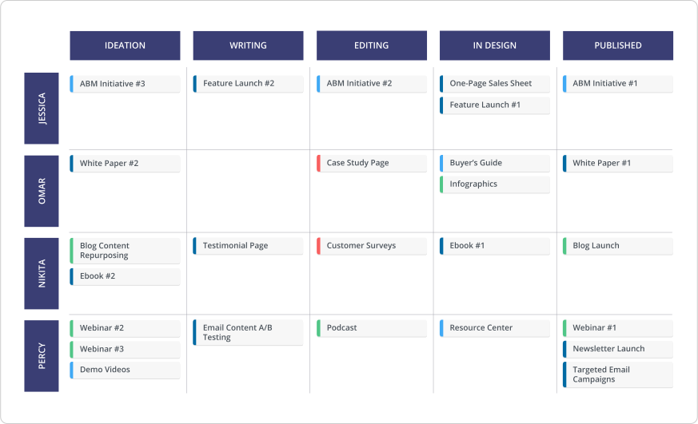
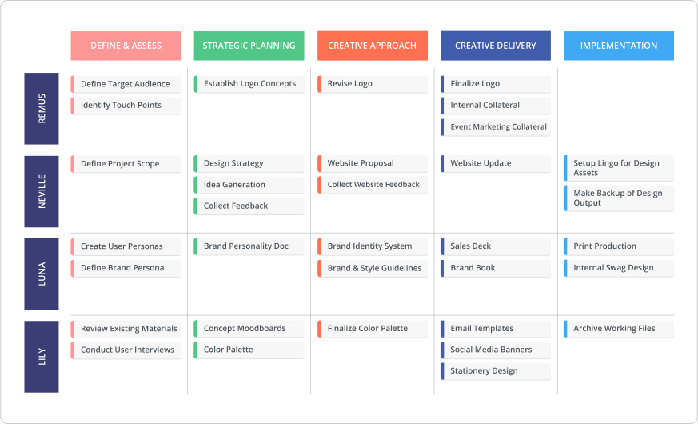

When it comes to roadmaps, the common assumption is that they’re tools for a business’ technical teams, you know, like product or engineering. But your other business teams like marketing, sales and HR, shouldn’t be shafted. Roadmapping is a bigger necessity for them than expected.
Roadmaps are communication tools for any type of team to share and align their entire business on their goals and strategy. Non-product teams need to track their growth just as much as their technical counterparts, so that they too can play a hand in achieving overall business goals.
Below, we’ve outlined 7 business roadmap templates to help your non-product teams plan and contribute to business growth. (Just so you know, you can access all these roadmaps in our template library!)
- Marketing roadmap
- Content marketing roadmap
- Digital marketing roadmap
- HR roadmap
- Sales roadmap
- Design roadmap
- Ecommerce roadmap
Technical teams, we got you too. Here's a guide of 10 powerful technology roadmap templates.
Marketing roadmap
As a heavily deadline-oriented team, marketing tends to be in a constant state of balancing many projects and deliverables. As a result, your digital marketer needs your content marketer’s copywriting help, who needs your designer’s expertise, who needs to finish some work for the events manager and so on. Things are a little chaotic.
A marketing roadmap tidies up the chaos, by visualizing major marketing initiatives across the different verticals on the team (content, digital marketing, events, design, ABM, etc.), so that every team member gets what their fellow marketer is undertaking. By surfacing the team’s priorities and goals, every marketer can make better decisions regarding resourcing and planning.
While this roadmap is owned by and made for marketers, a marketing roadmap also serves as a communication line to the rest of the organization on what the heck is going on with marketing.
Our marketing roadmap template offers two specific views. Our Timeline View allows you to map out when individual projects and initiatives will roll out over a specified timeframe. You can get very detail-oriented by pivoting the data on team verticals and owners so that everyone is aware of who is working on what and when.
Our Swimlane View categorizes your marketing deliverables and projects into their respective verticals and easily-digestible timeframes like quarters, so the team (and business) can know what’s happening with each specific marketing function in each timeframe.
P.S. If you want to get more in-depth into how you can visualize your marketing roadmap, our very own Marketing Director, Eleni, put together a list of four real-world ways she approaches our marketing team’s roadmap.
Organize your marketing team and initiatives with our marketing roadmap template.
Content marketing roadmap
While a marketing roadmap covers all verticals of your marketing team, sometimes those specific verticals need a roadmap for themselves. One such team is content marketing.
When building a content marketing roadmap the key is to remember: it visualizes a high-level strategy, not the nitty-gritty. This roadmap isn’t where you list every single piece of content you’re publishing. Instead, you’re showcasing a zoomed-out version of your content strategy that highlights major milestones like a new ebook, or a podcast season, or a snazzy video series.
Our Timeline View of a content marketing roadmap is meant for deadline-driven teams needing to sort through all the content projects they’re pushing. Mapping important content initiatives across months, quarters or a year, the projects can be grouped by marketing stage funnel. This grouping lets content teams communicate to the rest of marketing—and the organization—the business value of each project. Plus, they’ll be able to identify parts of the funnel they may be neglecting or over-exerting.
Furthermore, you can pivot the data based on owners, so that the content team can clarify priorities and ownership among themselves and to any curious stakeholders.

For content teams that place more emphasis on progress over dates, the Swimlane View is a better companion. Scrapping the funnel stages, a swimlane content marketing roadmap groups major content projects by status such as Ideation, Writing and Published. By also pivoting the data on owners, content teams can keep track of everyone’s big content pieces—and how close they are to being published.
Use our content marketing roadmap template to effectively outline your own content strategy.
Digital marketing roadmap
Another marketing vertical that often requires its own roadmap is digital marketing. As a big lead generator for marketing—and thus a key contributor to business growth—digital marketing teams balance a slew of complex channels at once. A digital marketing roadmap visualizes how this team uses these different channels to promote their business and product, whether that’s through SEO & SEM, display/banner advertisements, email or Google Adwords (to name a few).
Rather than outlining every action taken on these channels, digital marketing roadmaps highlight the most important channels and strategies enlisted by digital marketers. Digital marketers and marketing leads can use this roadmap to get buy-in from the rest of the organization regarding digital plans to funnel more leads to the business.
Use our Timeline View to orient your digital marketers (and organization) around critical deadlines for your digital marketing projects. Get in-depth by pivoting on owners so that team members can hold themselves—and others—accountable for the projects they’re managing. This allows marketing leads to determine issues with resourcing, as well as ensure everyone is working towards the next major deliverable.
The thing about digital marketing, it’s very experimental; meaning digital marketing teams need to be flexible. In these cases where strict(er) timelines don’t match your digital marketing plan, a Swimlane View is more relevant. By organizing work based on channels (SEO, paid search, social media, etc.) and charting it across easy-to-understand timeframes like quarters, the swimlane digital marketing roadmap offers a flexible visualization of your digital marketing plan.
Customize our digital marketing roadmap template to reflect your plan for digital lead generation.
HR roadmap
You can’t capture A+ talent without a plan. An HR roadmap is a tool precisely for that. A human resources department and/or recruiters use an HR roadmap to communicate their plan to grow out each team via new talent.
But business growth isn’t just influenced by hiring plans; company culture has a part to play in growing a business too. HR roadmaps are also an opportunity for HR teams to demonstrate company culture initiatives they plan on rolling out across the business to ensure healthy and happy employees.
While this document is an asset for HR and recruiters, this roadmap is beneficial to department leads as well. An HR roadmap communicate to C-level execs how a team will grow over time. Higher-ups can use the roadmap to determine if resourcing is being equally distributed or if certain talent gaps exist in the business.
If keeping an up-to-date schedule for business growth is more your speed, consider using a Timeline View for your HR roadmap. Outlining when new roles will be added to each team across the next few months, quarters, or year, gets everyone on the same page for how each department (and the business) is evolving.
Since hiring can sometimes take longer (or way less time) than expected, a timeline may not be the most appropriate view. Instead try a Swimlane View. Organizing hiring plans and HR initiatives across loose time buckets like quarters, instills flexibility into your HR plan.
Sidenote: Our head of HR—and former non-roadmapper—Rebekah, shares her step-by-step process of building her first HR roadmap here at Roadmunk. (In case, you're apprehensive about using a roadmap.)
Top-notch talent comes with a top-notch plan. Use our HR roadmap template to chart an A+ HR plan.
Sales roadmap
A sales roadmap is an overview of the sales strategies put in place to hit targets like a specific MRR, ARR, or number of deals closed. But much like many of the roadmaps on this list, the main thing to remember is that it’s high-level; it’s not the place for every sales rep to visualize every lead they’re nurturing.
Sales leaders can apply this roadmap to align the entire sales team on how their work plays into the business’ wider vision. Plus, they this roadmap can communicate the team’s major goals and priorities to teams like marketing, product and operations, so that the rest of the business can get a better understanding of sales’ operations.

Our Timeline View of a sales roadmap is extremely valuable for sales leaders who are sticklers for dates. This view aligns the sales team on major priorities and projects over the next few months, quarters or year, whether it’s related to strategy, lead generation or fighting retention and churn. And by surfacing key milestones like quarterly revenue goals, the timeline sales roadmap explicitly visualizes the goals that sales reps should rally around.
Our Swimlane View of a sales roadmap is best suited for a global sales teams. A swimlane sales roadmap categorizes initiatives based on a team’s geographic location, providing a snapshot of how sales will grow region-by-region. For example, your US sales team might be cold calling your lead lists, while the Europe team is understandably working on securing leads from the European launch of your product.
Another note: For growing sales teams, our VP of Sales and Customer Success, Jalil, breaks down how your sales roadmap will evolve from a startup to an SME to an enterprise.
Build your own sales roadmap to visualize how you'll rake in big $$.
Design roadmap
Streamlining a design team’s creative process into important phases like research, creative approach, delivery and implementation, a design roadmap concretely lays out the work each designer is responsible for. Design teams can use this roadmap to essentially check themselves on how long it’s taking them to complete certain creative projects.
At the same time, design teams can use the roadmap to communicate to the rest of the business how essential design projects are progressing. This helps design teams manage expectations for any not-design-savvy stakeholders demanding you whip up a design in a short timeframe.
We offer two views for our design roadmap template; the first being the Timeline View. Simply outlining each designer’s task for your preferred timeframe, this view indicates expected timeframes for each step of the creative process. It also pulls out essential milestones like client presentations and submission deadlines, allowing designers to plan and execute their work match up with these dates.

The second view is our Swimlane View which focuses less on communicating deliverables and more on communicating progress. The swimlane design roadmap makes it dead-simple to view the status of each designer’s projects—whether it’s being defined, planned or implemented.
Streamline your design process with our flexible design roadmap template.
Ecommerce roadmap
Organizing and visualizing the work behind growing an ecommerce platform, an ecommerce roadmap brings transparency to this multi-layered process involving multiple teams. Businesses running an ecommerce platform can use this roadmap to communicate to the entire organization the specific work done by teams like marketing, design and development over the next insert specific chunk of time.
Seeing as ecommerce platforms are influenced by various external time periods like back to school or seasonal changes, a Timeline View is very helpful. Emphasizing milestones and crucial dates, a timeline ecommerce roadmap helps these teams strategically plan their work around these dates. Showcasing each team’s projects across the next few months, quarters or year, allows each team and the business overall to see what exactly teams are doing to contribute to platform growth. And if you want to get even more granular, you can group work by owners so that you can tell an even more detailed story of your ecommerce growth plan.
For ecommerce platforms that aren’t as time-sensitive, you can apply the Swimlane View for your ecommerce roadmap. Charting each team’s deliverables and major projects across time buckets like quarters, this view serves a bird’s-eye view of how your business plans on growing out their ecommerce platform.
Move towards owning your digital marketplace with the help of our ecommerce roadmap template.